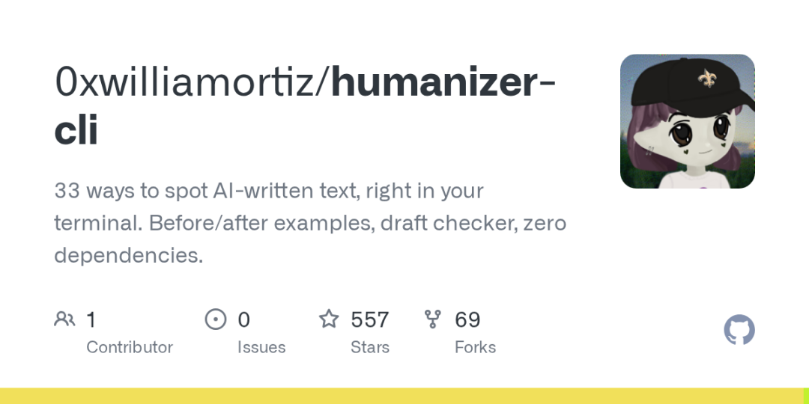

你让AI帮你写了一篇技术文档，看起来语句流畅、结构清晰，但总觉得哪里不对劲——「not only...but also」的句式像批发的，「it is worth noting that」每一段都来一次，结尾永远有个「in conclusion」。
AI写的东西有种说不出的「机器人味」，你闻得到但说不清。
0xwilliamortiz 开源了一个87KB的零依赖CLI工具 humanizer，把Wikipedia上总结的33种AI写作特征做成了终端里的对照手册——你可以一条条查，也可以直接扫你的草稿看中了多少条。

33种AI写作特征，从破折号到假热情全覆盖
基于 Wikipedia「Signs of AI writing」条目整理
humanizer 把每种特征都配了 before（AI写的） 和 after（人写的） 对照。举几个程序员最常中招的：
破折号上瘾（Em dash abuse）——AI特别喜欢用「—」连接句子，真人写技术文档通常用逗号或句号。
「不仅仅是X，更是Y」句式——AI最爱用的万能模板，「这个工具不仅仅是一个框架，更是一个生态系统」。程序员写推荐的时候，几乎不会用这个句式。
可制造的激情（Manufactured enthusiasm）——AI写开头总爱来个「In today's rapidly evolving tech landscape...」，真程序员开篇往往是一句「这玩意儿能解决什么问题」。
标题里的emoji——AI写文章特别喜欢每段小标题前面塞个emoji。真人程序员写的技术文档，通常只有代码里的注释才会出现emoji。
humanizer的规则不是玄学——33条全部来自Wikipedia社区数百位编辑的共识。它不是猜测，是一个对照检查清单。
安装和使用：87KB零依赖，2条命令搞定
Windows x64 二进制，终端直跑，数据不出机器
下载解压后直接跑：
.\humanizer.exe
.\humanizer.exe show 14 # 查看第14条规则+对照
.\humanizer.exe check README.md # 扫描草稿中了多少条
.\humanizer.exe search hedging # 搜关键词匹配的规则
.\humanizer.exe prompt # 输出完整提示词，直接贴给AI让它自查
也可以用 npx humanizer 进入交互界面，保持在终端里随时切过去查一条。整个过程不需要网络、不需要API key，所有数据留在本地——你草稿里写了什么，只有你知道。
程序员为什么需要这个：3个高频场景
不只是写公众号，你的日常里有太多AI在替你「说话」
场景一：GitHub README 和项目文档。你用AI生成了一份漂亮的README，但每个段落都以「This project provides...」「Additionally...」「Furthermore...」开头。Review 你项目的人扫一眼就知道是AI写的——第一印象直接从「这个开发者挺认真」变成「README都懒得自己写」。
场景二：给非技术同事写邮件。AI写的邮件礼貌过头，「I hope this email finds you well」「Please do not hesitate to reach out」——你的同事会想：这人平时说话挺直接的，怎么发邮件跟外交部发言人似的？
场景三：技术博客和团队Wiki。你让AI帮你把笔记扩写成一篇博客，但AI扩写之后全是「it is noteworthy that」「in the realm of」「as previously mentioned」。读者看不到你的思考过程，只看到一堆包装过的空话。
人和AI的分界线不在「会不会写」，而在「有没有真实的判断力」。humanizer 就是帮你在AI的流水线输出和人的真实表达之间，划出那条线的工具。
用 humanizer 的最低成本工作流：
→ 让AI写完草稿
→ 跑 humanizer check draft.md，看中了多少条
→ 对命中的条目逐条改，一次只改一两句就会明显不同
→ 最后跑 humanizer prompt 把规则粘贴给AI，让它自查一遍
总结——
AI帮你写了80%的内容，但你得负责把那20%的「人味」加回去。humanizer 没有魔法，它就是33条老编辑们总结的AI写作特征。你对照着一条条改，改完后你的文档、邮件、README读起来就像是你自己写的。不是你用了AI，是你用AI时没有丢掉自己的判断力。这才是一个程序员区别于AI流水线的地方。
💬 你用AI写文档时最常中招的「机器人味」是哪条？破折号上瘾还是「not only...but also」？评论区说说，我来帮你诊断。
---
📂 更多同类内容，点击合集「程序员效率工具库」→
如果觉得有用，点个「在看」↘